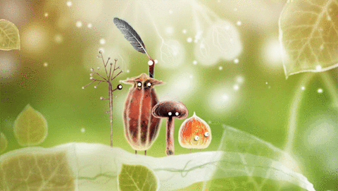

I originally found this game when I was moving out from a parent who was no longer a good influence on me. In this time, I was fairly scared and confused with my life. Especially with then becoming serious about school, I found myself going outside much less then I used to. Mental health is greatly impacted by one's environment- and I knew that the amount of time I would have would not allow me to do many outdoor activities i once participated in. I then found Botanicula, and even though it was just a mobile game; it inspired me to still go outside and heal myself with my environment.
Botanicula has a very uplifting tone to the game, and the message of the story is very sweet. Many people don't just play it for the story, but just for the calmness that they experience when playing the game.
